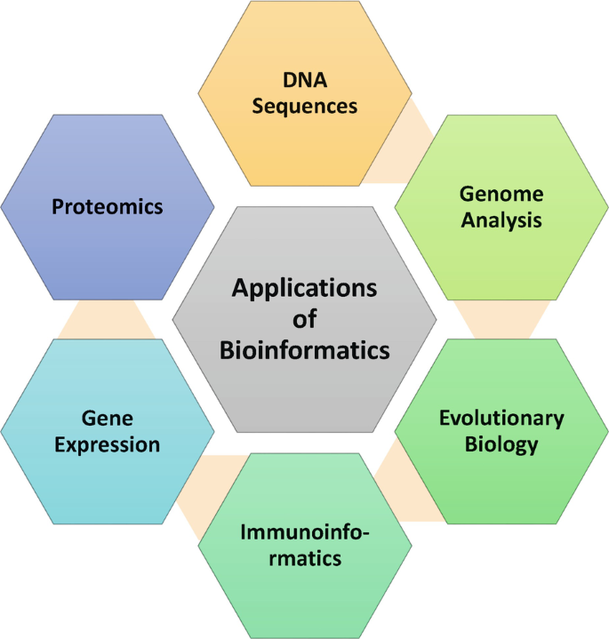

Bioinformatics applications use computational tools and methods to analyze biological data. These applications have a wide range of uses, including:
Sequence and analyze genomes: Bioinformatics tools can sequence, annotate and compare genomes of various organisms, allowing researchers to understand the genetic makeup of organisms and identify genes responsible for particular traits. For instance, bioinformatics tools can help identify genetic variations that cause various diseases, such as cancer, heart disease, and diabetes. By comparing the genomes of healthy and diseased individuals, researchers can discover mutations associated with the disease and develop targeted therapies to treat it.
Identify genes and their functions: Bioinformatics applications can help researchers identify and classify genes based on their functions, thereby helping in understanding the role of genes in biological processes. We can, for example, identify genes that are involved in the regulation of the immune system. By understanding the functions of these genes, researchers can develop treatments for autoimmune diseases such as rheumatoid arthritis, lupus, and multiple sclerosis.

Predict protein structures and functions:We can use Bioinformatics applications to predict protein structures and their functions based on their amino acid sequences, which can help drug discovery and protein engineering.
For example, bioinformatics tools can predict the 3D structure of a protein molecule, which can help researchers design drugs that target specific proteins involved in diseases such as HIV, Alzheimer's, and cancer. By designing drugs that bind to particular protein parts, researchers can develop targeted therapies that are more effective and have fewer side effects.
Analyze gene expression data:We can use Bioinformatics applications to analyze gene expression data to understand how genes are regulated in cells and tissues, helping identify biomarkers for diseases and develop treatments. We can, for example, use bioinformatics tools to analyze gene expression data from cancer patients. By comparing the expression levels of genes in cancer cells to normal cells, researchers can identify upregulated or downregulated genes in cancer. These genes can then be used as biomarkers to diagnose the disease, monitor the progression of the disease, and develop targeted therapies.
Design new drugs and therapies:We can use Bioinformatics applications to help design new drugs and therapies by predicting drug interactions and biological molecules. For example, these bioinformatics tools can predict how a drug molecule will interact with a protein molecule in the body. By understanding the molecular interactions between drugs and proteins, researchers can develop more effective drugs with fewer side effects.